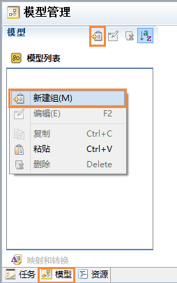
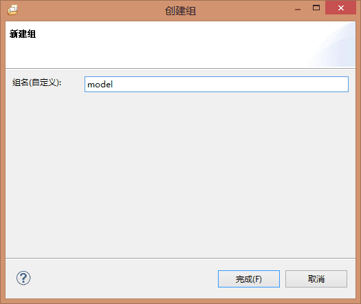
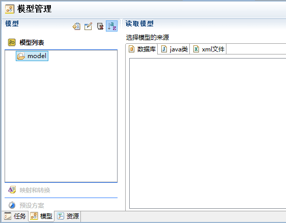
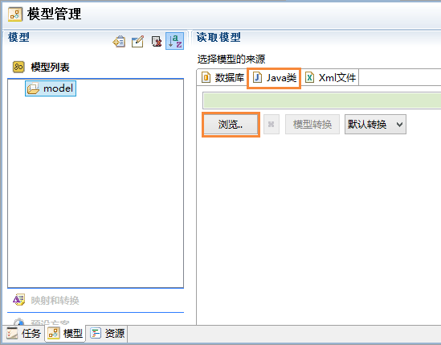
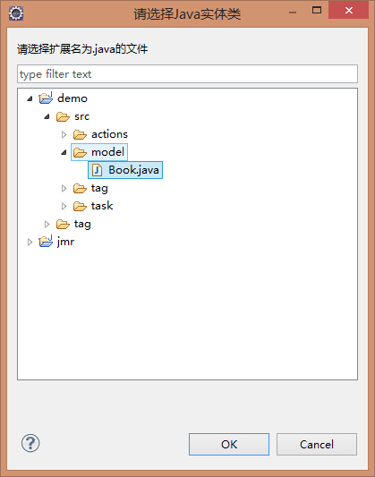
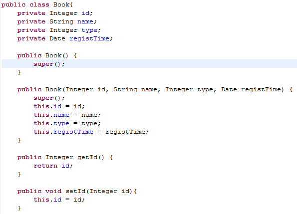
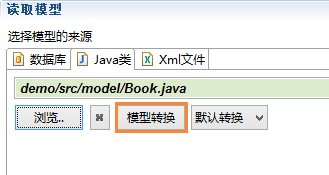
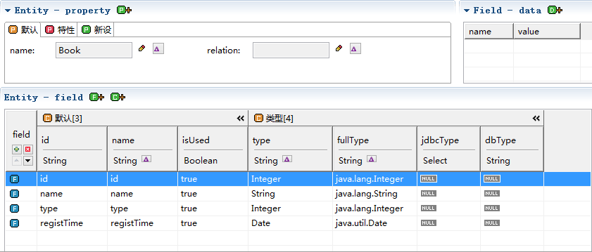
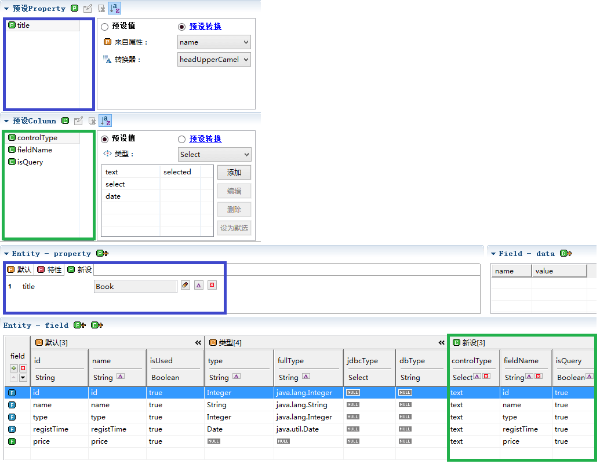
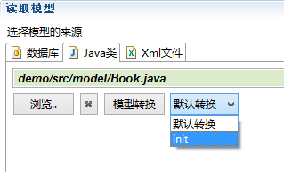

Jmr可以通过读取java类建立对应的模型，在开发中，有人喜欢先设计数据库，有人喜欢先设计类。
喜欢先设计数据库的人说：先设计数据库，关系设计是和实际开发语言脱离的。
喜欢先设计类的人说：应当先设计类，没有大概的类设计，谈不上表设计。粒度根本无法掌握。没有类，哪来的ER关系？
总之，公说公有理，婆说婆有理，Jmr同时满足2种需求。至于要选用哪种模式，小伙伴们要根据自己的项目，是以数据库为驱动的开发还是以面向对象为驱动的开发。
PS：暂时只支持java类，后面会推出其它语言的类。
首先，打开jmr文件,切换模型页,点击菜单上的新建按钮，或者在模型列表中右键，新建组。

输入组名，例如：model。

新建完成后，右边副页出现数据来源配置，目前支持从数据库、java类、xml文件生成模型。

选中任意的模型组，在从属页面中，选择“Java类”，浏览。

我们选择一个java类Book.java

这个类有4个属性:id，name，type，registTime和它们的get/set方法。

最后点击模型转换。

生成的模型。

小伙伴们在转换模型后，还会手动修改自己的模型内容，以符合自己的业务需求。 预设可以帮大家预先设置好属性、列和字段，省去了大量手动修改模型的时间。
关于预设方案的使用，详细请参考下面内容
在实际项目开发中，根据业务需求，我们需要修改和新增模型的内容 和数据库的转换有些区别，java类已经有name、type、fullType。
我们就可以设置预设

只要在转换中，选择预设方案，init模型转换。
